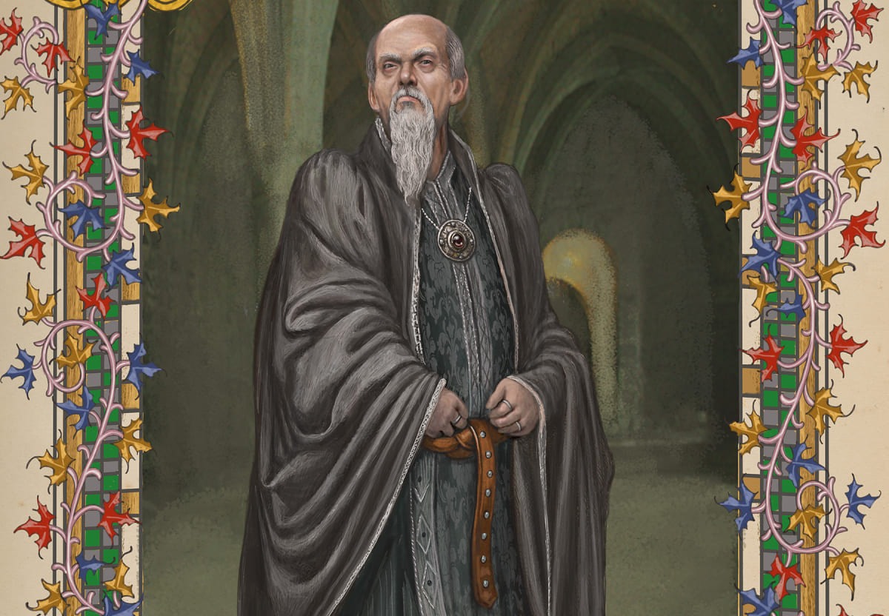
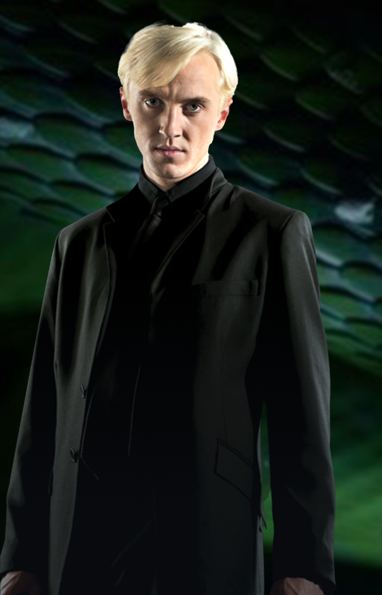
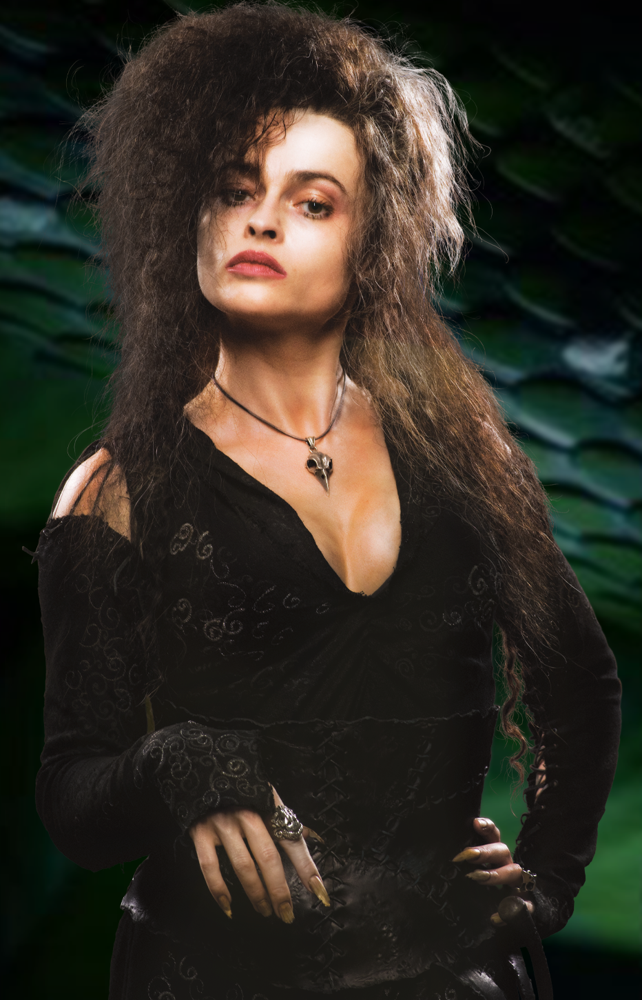
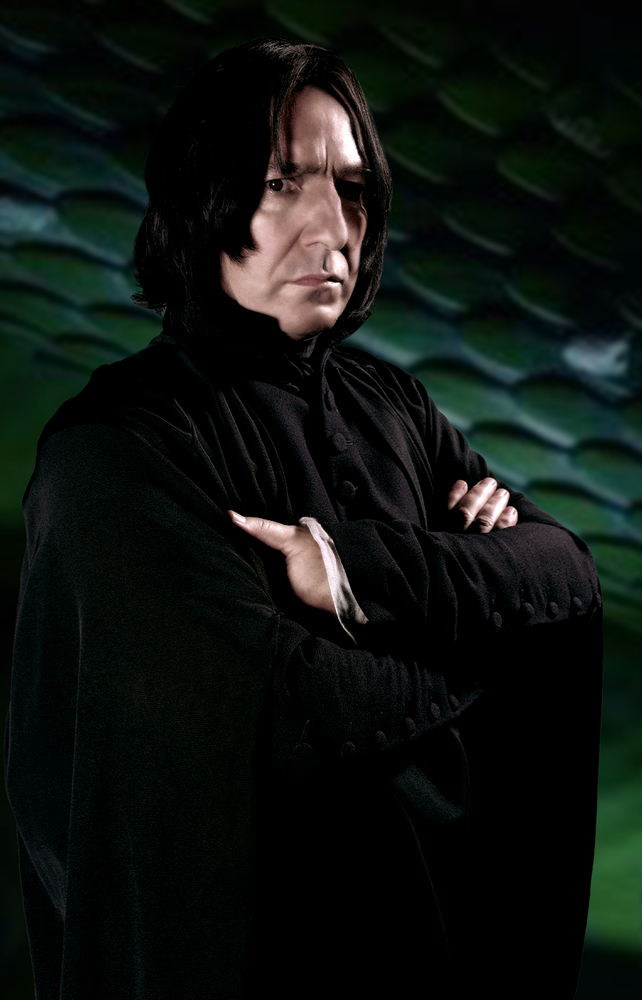

"Or perhaps in Slytherin, You'll make your real friends, Those cunning folk use any means, To achieve their ends."
— Sorting Hat
Slytherin is one of the four Houses at Hogwarts School of Witchcraft and Wizardry, founded by Salazar Slytherin. Salazar instructed the Sorting Hat to select students who exhibited traits such as cunning, resourcefulness, leadership, and ambition. While he favored pure-blood students, students of any blood status could be placed in Slytherin, though Muggle-borns were rare.
The house's emblematic animal is a snake, and its colors are green and silver. Notable heads of the house include Horace Slughorn and Severus Snape, with the Bloody Baron serving as the house ghost.
Slytherin corresponds to the element of water, reflecting the association between serpents and bodies of water in mythology. The house colors, green and silver, represent the shades of lakes and rainwater.

Salazar Slytherin (early 993) was a pure-blood wizard, noted for his cunning and determination. He was regarded as one of the greatest wizards of the age, regarded for his abilities as a Parselmouth and as a skilled Legilimens. Slytherin was one of the four founders of Hogwarts School of Witchcraft and Wizardry along with Godric Gryffindor, Helga Hufflepuff, and Rowena Ravenclaw. He was also the namesake of Slytherin House.


